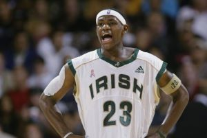

Life as a Prince
Lebron Raymone James was born on December 30, 1984, in Akron, Ohio. Lebron found early stardom from his highschool career, in St. Vincent-St. Mary High School. Where he ended his highschool career having scored more then 2000 points and help his school rank first in the top national rankings, because of this is was named the best NBA highschool prospect ever. In 2003, after finishing his highschool education. Lebron was the first pick in the 2003 NBA Draft, he was signed to the Cleveland Cavaliers, where is journey to become king began.
Achievement
Here are just some of Lebron's achievements, to prove that he is indeed the greatest basketball player of all time, the G.O.A.T:
- NBA Rookie of the Year (2003)
- 19x NBA All-Star
- 4x NBA MVP
- 4x NBA Champion
- 4x NBA Finals MVP
- 2008 Olympic Games gold medalist
- 2012 Olympic Games gold medalist
- NBA all-time leading scorer
- Amazing father to all 3 children of his
- Great Husband
Photo Album
Here is a collection of Lebron pictures, for us to gaze on his highness' greatness: